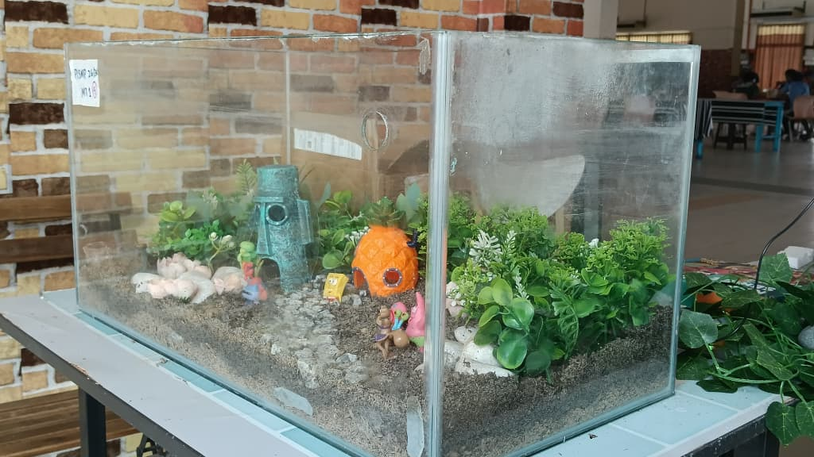
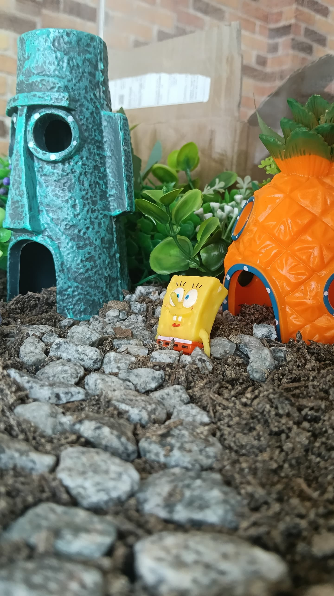
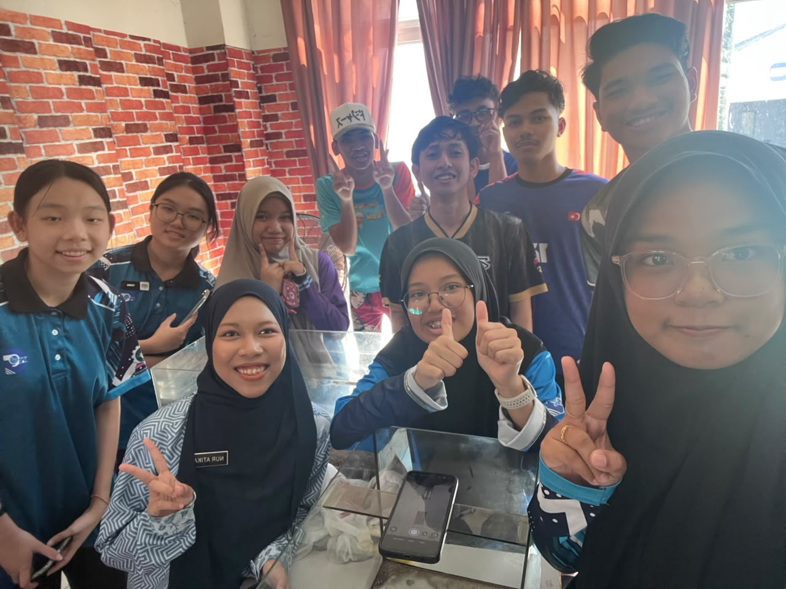

Miniature Tropical Forest.
Satu bekas kaca, satu dunia imaginasi. Landskap hijau dipadukan dengan rumah nanas, rumah batu, laluan kerikil dan karakter mini yang ceria.
 LANDSKAP MINI · MT1
LANDSKAP MINI · MT1
Hutan mini dengan sentuhan dunia fantasi.
Miniature Tropical Forest ialah hasil kerja kelas MT1 yang menampilkan susunan hijauan, kerikil, lapisan medium dan miniatur hiasan dalam sebuah bekas kaca.
Dua rumah mini menjadi tarikan utama: rumah nanas berwarna jingga dan struktur kebiruan menyerupai batu. Watak kecil dan laluan kerikil menjadikan keseluruhan landskap lebih hidup.
Setiap sudut disusun untuk membentuk pengalaman visual yang menggabungkan tekstur semula jadi, warna ceria dan unsur imaginasi.
Empat elemen, satu dunia mini.
Empat perincian utama memberi identiti tersendiri kepada landskap ini, daripada rumah mini yang berwarna-warni hingga susunan batu dan hijauan.
Terokai setiap sudut terrarium.
Tekan penanda bernombor pada gambar untuk melihat foto dekat dan penerangan komponen tersebut.
 TITIK 02 / 04
TITIK 02 / 04
Rumah nanas
Rumah nanas jingga menambahkan warna terang sebagai fokus landskap.
Keindahan terletak pada perincian.
Daripada tekstur kerikil di hadapan hingga hijauan di bahagian belakang, setiap lapisan membantu membentuk pemandangan hutan mini.

Tekstur permukaan
Batu kecil dan kerikil membentuk laluan yang memandu pandangan ke arah rumah mini.
Daripada bahan kepada hasil akhir.
Satu video pendek dan beberapa foto mendokumentasikan persediaan, kerjasama dan hasil terrarium.


Lapan foto. Cerita yang lengkap.
Saksikan hasil akhir, perincian reka bentuk dan suasana di sebalik pembinaan terrarium ini.
Empat kumpulan. Satu hasil bersama.
Empat bidang tumpuan saling melengkapi dalam menghidupkan idea Miniature Tropical Forest.